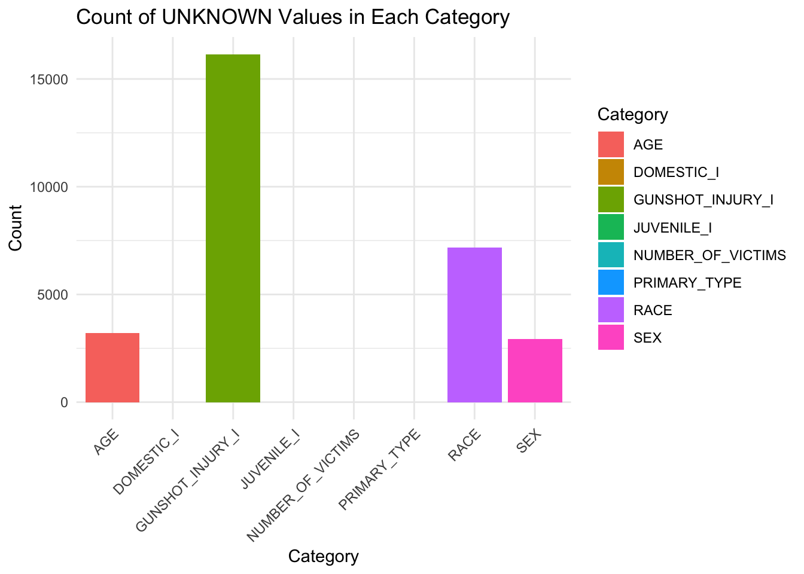
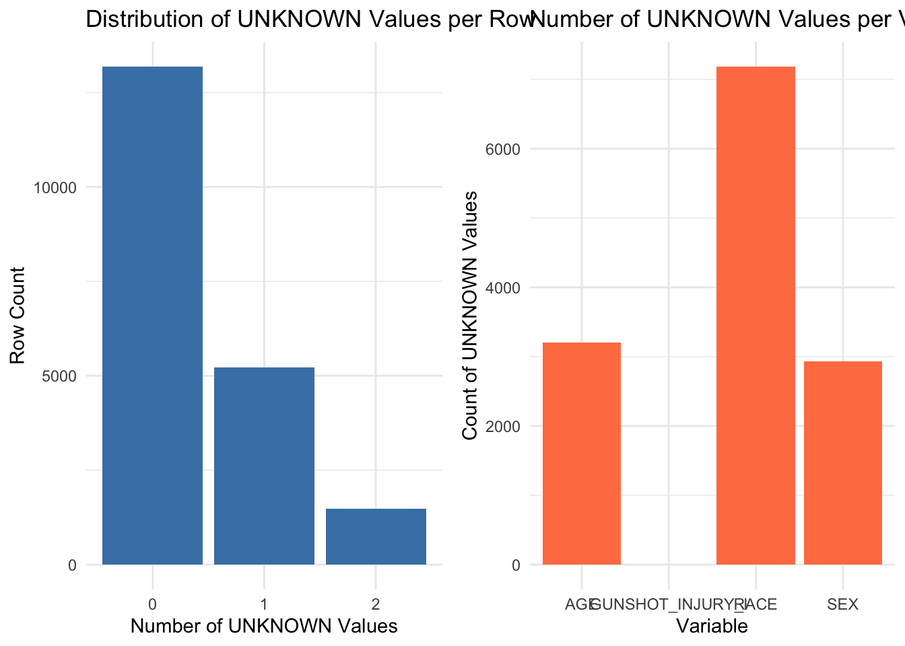
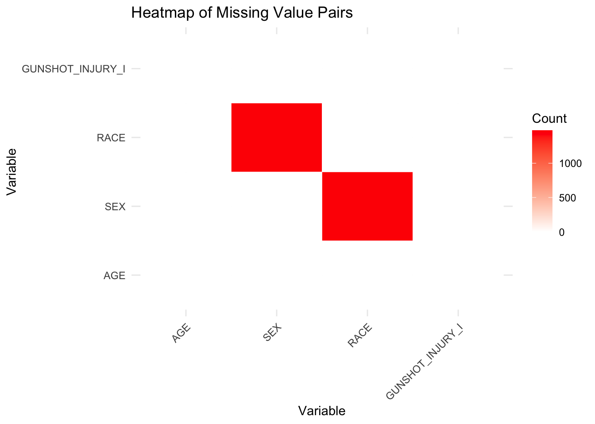
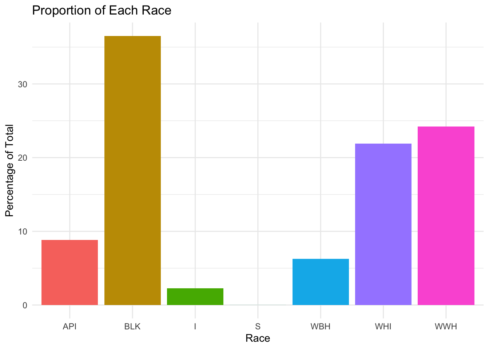
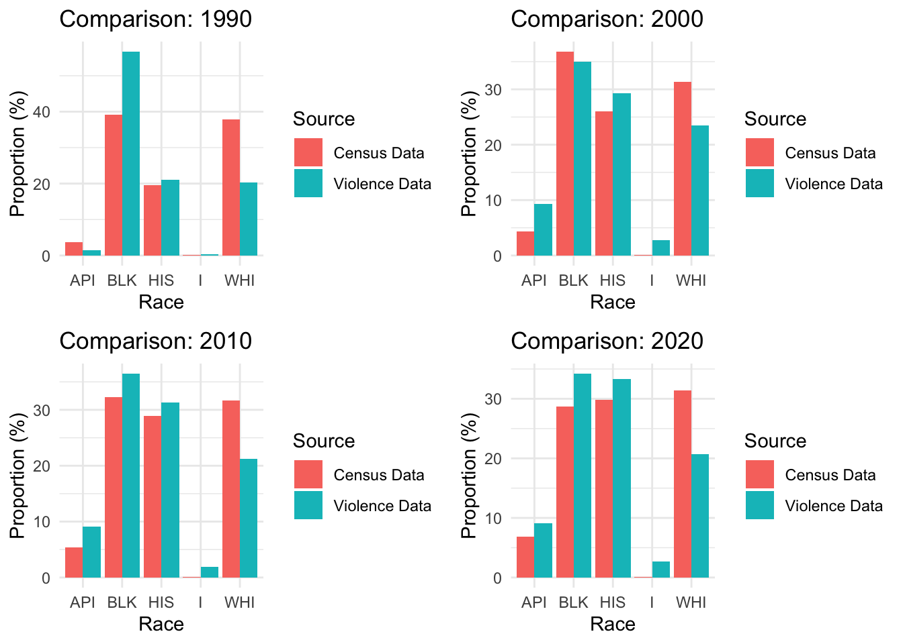

library(readr)
library(dplyr)
library(ggplot2)
library(reshape2)
library(gridExtra)Importing the Dataset and Column Descriptions
First, we import the dataset and provide column descriptions for better understanding.
Violence_raw <- read_csv("Violence_Reduction_-_Victim_Demographics_-_Aggregated.csv", show_col_types = FALSE)
Violence_raw$Year <- substr(Violence_raw$TIME_PERIOD, 1, 4)TIME_PERIOD
The time period aggregated.
TIME_PERIOD_START
All victimizations have been aggregated to the quarter level. This time stamp reflects the start of the quarter.
TIME_PERIOD_END
All victimizations have been aggregated to the quarter level. This time stamp reflects the end of the quarter.
PRIMARY_TYPE
Text description of the IUCR Code that describes the major crime category for the corresponding victimization it falls into. This column represents only the crime that this specific victim within the incident experienced.
AGE
The age of the victims grouped by decade.
SEX
The sex of the victims. Victimization demographic data shown here are captured by CPD and limited to information included in the police report, which sometimes is not supported by individual self-reporting.
RACE
The race of the victims. Victimization demographic data shown here are captured by CPD and limited to information included in the police report, which may not often be supported by individual self-reporting.
JUVENILE_I
Whether the victims were juveniles (under age 18). A blank value means Unknown.
DOMESTIC_I
Indicates whether the aggregated number of victimizations were domestic-related as determined by the initial reporting officer or the investigating detective.
GUNSHOT_INJURY_I
Indicator field describing whether or not a victim was injured by gunfire. Shooting data is not available before 2010 so all non-homicide victimizations prior to 2010 will be recorded as “UNKNOWN”.
NUMBER_OF_VICTIMS
The number of victims matching the unique combination of all other columns.
Data Cleaning: Handling Missing Values
Next, we perform data cleaning. The first step is to remove potential missing values. The columns that may contain missing values are as follows:
“AGE”, “SEX”, “RACE”, “JUVENILE_I”, “DOMESTIC_I”, “GUNSHOT_INJURY_I”, “NUMBER_OF_VICTIMS”, “PRIMARY_TYPE”
We will now count the number of missing values in each of these columns.
Violence_na <- Violence_raw[apply(Violence_raw[, c("AGE", "SEX", "RACE", "JUVENILE_I",
"DOMESTIC_I", "GUNSHOT_INJURY_I",
"NUMBER_OF_VICTIMS", "PRIMARY_TYPE")],
1, function(row) any(row == "UNKNOWN")), ]
Violence_remove_na <- Violence_raw[!apply(Violence_raw[, c("AGE", "SEX", "RACE", "JUVENILE_I",
"DOMESTIC_I", "GUNSHOT_INJURY_I",
"NUMBER_OF_VICTIMS", "PRIMARY_TYPE")],
1, function(row) any(row == "UNKNOWN")), ]
Violence_remove_na <- Violence_remove_na %>%
mutate(Year = as.numeric(Year))
unknown_counts <- colSums(Violence_raw[, c("AGE", "SEX", "RACE", "JUVENILE_I",
"DOMESTIC_I", "GUNSHOT_INJURY_I",
"NUMBER_OF_VICTIMS", "PRIMARY_TYPE")] == "UNKNOWN")
unknown_df <- data.frame(Category = names(unknown_counts), Count = unknown_counts)
ggplot(unknown_df, aes(x = Category, y = Count, fill = Category)) +
geom_bar(stat = "identity") +
labs(title = "Count of UNKNOWN Values in Each Category",
x = "Category",
y = "Count") +
theme_minimal() +
theme(axis.text.x = element_text(angle = 45, hjust = 1))Warning: Removed 1 row containing missing values or values outside the scale range
(`geom_bar()`).
We found that GUNSHOT_INJURY_I has an extremely high number of missing values. However, according to the dataset definition:
“Shooting data is not available before 2010, so all non-homicide victimizations prior to 2010 will be recorded as ‘UNKNOWN’.”
It seems that UNKNOWN in records before 2010 should not be considered as missing values. We will remove these “UNKNOWN” values from GUNSHOT_INJURY_I and then re-evaluate the missing values.
At the same time, we found that missing values exist only in “AGE”, “SEX”, “RACE”, and “GUNSHOT_INJURY_I”.
In the following sections, we will focus our analysis on these four columns.
Next, we will visualize the results by generating two plots:
1. The distribution of missing values per row.
2. The distribution of missing values per column.
Violence_na <- Violence_na %>%
mutate(Year = as.numeric(Year),
GUNSHOT_INJURY_I = ifelse(Year <= 2010 & GUNSHOT_INJURY_I == "UNKNOWN",
"Before2010",
GUNSHOT_INJURY_I))
Violence_na$missing_count <- rowSums(Violence_na == "UNKNOWN")
missing_summary <- table(Violence_na$missing_count)
variable_missing_counts <- colSums(Violence_na == "UNKNOWN")[c("AGE", "SEX", "RACE", "GUNSHOT_INJURY_I")]
missing_summary_df <- data.frame(Missing_Count = as.numeric(names(missing_summary)),
Count = as.numeric(missing_summary))
variable_missing_df <- data.frame(Variable = names(variable_missing_counts),
Count = as.numeric(variable_missing_counts))
p1 <- ggplot(missing_summary_df, aes(x = factor(Missing_Count), y = Count)) +
geom_bar(stat = "identity", fill = "steelblue") +
labs(title = "Distribution of UNKNOWN Values per Row",
x = "Number of UNKNOWN Values",
y = "Row Count") +
theme_minimal()
p2 <- ggplot(variable_missing_df, aes(x = Variable, y = Count)) +
geom_bar(stat = "identity", fill = "coral") +
labs(title = "Number of UNKNOWN Values per Variable",
x = "Variable",
y = "Count of UNKNOWN Values") +
theme_minimal()
grid.arrange(p1, p2, ncol = 2)
We found that the missing values in “GUNSHOT_INJURY_I” have been reduced to zero. This suggests that all missing values in “GUNSHOT_INJURY_I” were caused by the dataset’s counting rules.
Among “AGE”, “SEX”, and “RACE”, having a single missing value might be acceptable. Before analyzing rows with two missing values, we refer to the Chicago Police Department’s definitions of “UNKNOWN” in “SEX” and “RACE” as follows:
(https://www.cpdwiki.org/wiki/quick_reference/race_codes)
Race Definitions
- BLK: A person having origins in any black racial groups of Africa.
- WHI: A person having origins in any of the peoples of Europe, North Africa, or the Middle East.
- WBH: A person having origins in any black racial groups of Africa and is of Mexican, Puerto Rican, Cuban, Central or South American, or other Spanish culture or origin.
- WWH: A person having origins in any of the peoples of Europe, North Africa, or the Middle East and is of Mexican, Puerto Rican, Cuban, Central or South American, or other Spanish culture or origin.
- I: A person having origins in any of the original peoples of North America and who maintains cultural identification through tribal affiliation or community recognition.
- API: A person having origins in any of the original peoples of the Far East, Southeast Asia, the Indian subcontinent, or the Pacific Islands; this area includes, for example, China, India, Japan, Korea, the Philippine Islands, Samoa, etc.
- Unknown: A person whose racial and/or ethnic origin is unknown or one who refuses to disclose their racial and/or ethnic origin.
Gender Definitions
- Male (M)
- Female (F)
- Non-binary (N)
- Unknown or declined to answer (X)
We are curious about how rows with two missing values are distributed, so we visualize the missing value patterns using a heatmap.
Violence_na$missing_count <- rowSums(Violence_na == "UNKNOWN")
df_missing_2 <- Violence_na[Violence_na$missing_count == 2, ]
vars <- c("AGE", "SEX", "RACE", "GUNSHOT_INJURY_I")
missing_matrix <- matrix(0, nrow = 4, ncol = 4, dimnames = list(vars, vars))
for (i in 1:nrow(df_missing_2)) {
missing_vars <- names(df_missing_2[i, ])[df_missing_2[i, ] == "UNKNOWN"]
if (length(missing_vars) == 2) {
missing_matrix[missing_vars[1], missing_vars[2]] <- missing_matrix[missing_vars[1], missing_vars[2]] + 1
missing_matrix[missing_vars[2], missing_vars[1]] <- missing_matrix[missing_vars[2], missing_vars[1]] + 1
}
}
heatmap_data <- as.data.frame(as.table(missing_matrix))
colnames(heatmap_data) <- c("Variable1", "Variable2", "Count")
ggplot(heatmap_data, aes(x = Variable1, y = Variable2, fill = Count)) +
geom_tile(color = "white") +
scale_fill_gradient(low = "white", high = "red") +
labs(title = "Heatmap of Missing Value Pairs",
x = "Variable",
y = "Variable",
fill = "Count") +
theme_minimal() +
theme(axis.text.x = element_text(angle = 45, hjust = 1))
All cases with two missing values result from suspects refusing to provide information. Since this data accounts for only around a thousand records, we consider it of limited value and will exclude these cases from our analysis.
Violence_na <- Violence_na %>%
mutate(GUNSHOT_INJURY_I = ifelse(GUNSHOT_INJURY_I == "Before2010", "UNKOWN", GUNSHOT_INJURY_I))
Violence_na$missing_count <- rowSums(Violence_na == "UNKNOWN")
Violence_filtered <- Violence_na %>% filter(missing_count < 2) %>% select(-missing_count)
Violence_clean_missing <- bind_rows(Violence_remove_na, Violence_filtered)Comparing Chicago Crime Data by Race with U.S. Census Data
Next, we will compare the racial distribution in Chicago crime data with the racial demographics from the U.S. Census for Chicago.
The crime dataset spans from 1991 to 2025, while census data is available for 1990, 2000, 2010, and 2020. To align these datasets, we will group the crime data using 10-year and 5-year intervals for analysis.
Violence_clean_missing$Year <- as.numeric(Violence_clean_missing$Year)
year_ranges_5 <- split(Violence_clean_missing, cut(Violence_clean_missing$Year,
breaks = seq(1991, 2026, by = 5), right = FALSE, labels = FALSE))
year_ranges_10 <- split(Violence_clean_missing, cut(Violence_clean_missing$Year,
breaks = c(seq(1991, 2021, by = 10), 2026), right = FALSE, labels = FALSE))
for (i in seq_along(year_ranges_5)) {
assign(paste0("Violence_5yr_", i), year_ranges_5[[i]])
}
for (i in seq_along(year_ranges_10)) {
assign(paste0("Violence_10yr_", i), year_ranges_10[[i]])
}Here is the racial distribution of crime records in Chicago across all available years.
If nationwide racial crime distribution data is available, we can add it for comparison.

used (Mb) gc trigger (Mb) limit (Mb) max used (Mb)
Ncells 1200825 64.2 2423471 129.5 NA 2423471 129.5
Vcells 5359293 40.9 10146329 77.5 16384 8388502 64.0Here is data from (https://www.census.gov)
chicago_demographics <- data.frame(
Year = c(1990, 2000, 2010, 2020),
WHI= c(37.9, 31.3, 31.7, 31.4),
BLK = c(39.1, 36.8, 32.3, 28.7),
HIS = c(19.6, 26.0, 28.9, 29.8),
API = c(3.7, 4.3, 5.4, 6.9),
I = c(0.2,0.15,0.15,0.12)
)
chicago_demographics Year WHI BLK HIS API I
1 1990 37.9 39.1 19.6 3.7 0.20
2 2000 31.3 36.8 26.0 4.3 0.15
3 2010 31.7 32.3 28.9 5.4 0.15
4 2020 31.4 28.7 29.8 6.9 0.12Below is a comparison of racial crime record proportions and U.S. Census results, with a separate statistical chart for each decade.
plot_comparison <- function(violence_df, year, title) {
filtered_df <- violence_df %>% filter(!(RACE %in% c("UNKNOWN", "S")))
# Adjust HIS category by combining WBH and WWH into HIS
filtered_df <- filtered_df %>%
mutate(RACE = ifelse(RACE %in% c("WBH", "WWH"), "HIS", RACE))
race_counts <- filtered_df %>%
group_by(RACE) %>%
summarise(Count = n()) %>%
mutate(Proportion = Count / sum(Count) * 100)
chicago_data <- chicago_demographics[chicago_demographics$Year == year, ]
chicago_proportions <- data.frame(
RACE = c("WHI", "BLK", "HIS", "API", "I"),
Proportion = as.numeric(chicago_data[2:6])
)
race_counts$Source <- "Violence Data"
chicago_proportions$Source <- "Census Data"
combined_data <- bind_rows(race_counts, chicago_proportions)
ggplot(combined_data, aes(x = RACE, y = Proportion, fill = Source)) +
geom_bar(stat = "identity", position = "dodge") +
labs(title = title, x = "Race", y = "Proportion (%)") +
theme_minimal()
}
p1 <- plot_comparison(Violence_10yr_1, 1990, "Comparison: 1990")
p2 <- plot_comparison(Violence_10yr_2, 2000, "Comparison: 2000")
p3 <- plot_comparison(Violence_10yr_3, 2010, "Comparison: 2010")
p4 <- plot_comparison(Violence_10yr_4, 2020, "Comparison: 2020")
grid.arrange(p1, p2, p3, p4, ncol = 2, nrow = 2)
Violence_clean_missing# A tibble: 51,070 × 12
TIME_PERIOD TIME_PERIOD_START TIME_PERIOD_END PRIMARY_TYPE AGE SEX RACE
<chr> <chr> <chr> <chr> <chr> <chr> <chr>
1 2022 Q2 03/01/2022 06/30/2022 BATTERY 70-79 M API
2 2015 Q4 10/01/2015 12/31/2015 ROBBERY 30-39 F API
3 2017 Q4 10/01/2017 12/31/2017 ASSAULT 0-19 M WWH
4 2023 Q3 07/01/2023 09/30/2023 ASSAULT 0-19 M WBH
5 2018 Q3 07/01/2018 09/30/2018 ROBBERY 30-39 F WHI
6 2024 Q1 01/01/2024 03/31/2024 ROBBERY 30-39 M API
7 2010 Q1 01/01/2010 03/31/2010 CRIMINAL SEX… 20-29 F API
8 2010 Q1 01/01/2010 03/31/2010 ROBBERY 70-79 M WHI
9 2017 Q3 07/01/2017 09/30/2017 ROBBERY 20-29 M WWH
10 2023 Q3 07/01/2023 09/30/2023 CRIMINAL SEX… 40-49 M WWH
# ℹ 51,060 more rows
# ℹ 5 more variables: JUVENILE_I <lgl>, DOMESTIC_I <lgl>,
# GUNSHOT_INJURY_I <chr>, NUMBER_OF_VICTIMS <dbl>, Year <dbl>